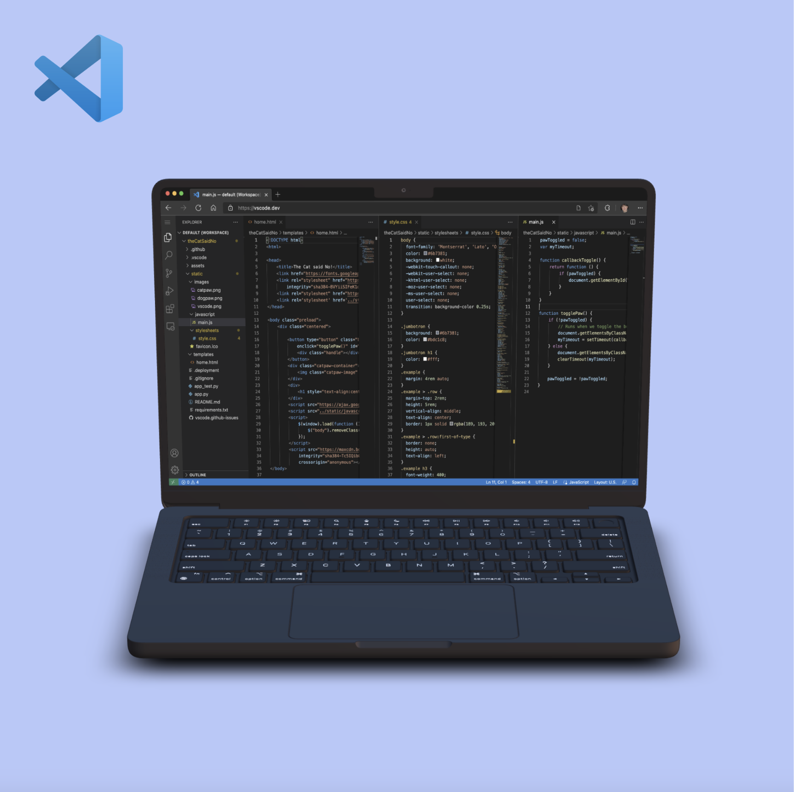

Overview
CodeHelp is a terminal-based Python application that uses a large language model to help novice programmers debug code, understand errors, and review plain-language explanations without leaving their development environment.

Problem / Research Question
Novice programmers often struggle to interpret cryptic error messages and do not always know how to use general-purpose AI assistants productively for debugging. This project explored whether a purpose-built, terminal-based tool could make errors and AI-generated guidance more understandable and actionable for beginners.
My Contribution
I helped define the tool's core features, built the REPL (read-eval-print loop) that structured the terminal interaction, and initiated usability testing with novice programmers.
How It Worked
- Input Choose a code file
- Inspect Run it and collect errors
- Select Debug, optimize, or explain
- Review Read model-generated guidance
CodeHelp ran as a Python script in the VS Code terminal. It attempted to run the selected file, aggregated error logs, and opened a REPL with three actions: Debug for non-functional code, Optimize for suggested improvements, and Explain for a simpler account of what working code did.
Evaluation
The details below reflect what is documented in the 2023 project slides; undocumented study details are identified directly.
- Participants
- Novice programmers with varying experience levels. Two participants are quoted in the slides; the total sample size is not documented.
- Format
- Early usability tests and a survey. Moderation format and session length are not documented.
- Tasks
- Evaluate CodeHelp's debugging explanations and proposed solutions. The slides do not preserve a detailed task script.
- Data collected
- Survey responses, self-reported debugging time, recommendation intent, and qualitative participant comments.
Early Observations
The surviving study summary reports that participants appreciated CodeHelp's clear explanations and efficient solutions and would recommend the tool to other novice programmers. The two included comments describe the guidance as helpful, directly actionable, and especially useful when a language does not provide a clear error. These are preliminary usability signals, not generalizable findings.
Limitations
This was an early prototype evaluation. The surviving materials do not document the full sample size, participant demographics, session length, detailed task protocol, or analysis method, so the observations should not be treated as statistically robust. The study also did not establish how the tool would perform in students' day-to-day coding workflows or how reliably its generated guidance avoided errors.